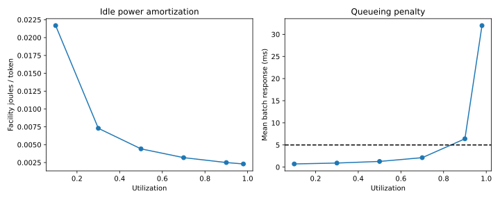

Chapter 10 · Systems · 10–14 hours
Servers, racks, and useful work
When does a more efficient device reduce facility energy?
A device can use one tenth as much switching energy while the server consumes almost the same power. It can also enable more useful work under a fixed power cap, leaving total energy unchanged. Both are reasonable outcomes. The question is which resource and denominator the comparison holds fixed.
Prerequisites: Chapters 5, 6, and 9; probability and calculus. Objectives: build a non-overlapping energy budget, derive a queueing limit, analyze communication and thermal constraints, distinguish fixed-work savings from capacity expansion, and translate a system target into a requirement on lower layers.
10.1 Account for energy once
Let $r$ denote useful output rate in tokens/s and $e_d$ the modeled dynamic energy per token in J/token. Let $P_0$ be baseline IT power in watts, covering the portion not already counted in $r e_d$. Then $P_{IT}=P_0+r e_d$ and $e_{IT}=P_{IT}/r=P_0/r+e_d$. This decomposition is a model: baseline power can depend on clock state, temperature, memory residency, and workload. A power-meter trace is needed to fit it.
Our cumulative scenario uses $P_0=45$ W and $e_d=84.3243$ µJ/token, with the latter containing modeled memory traffic and arithmetic once each. The 45 W is an explicit assumption, not an idle-power measurement of a named accelerator. It dominates this deliberately small teaching workload. That dominance makes a useful lesson visible: optimizing a tiny dynamic term can have a small effect on the total.
Facility power also includes power conversion, cooling, and other overhead. Power usage effectiveness, PUE, is defined as facility energy divided by IT-equipment energy over the specified accounting interval. In an illustrative steady scenario we use a constant multiplier $p$ and write $P_{facility}=pP_{IT}$. A reported annual PUE should not automatically be interpreted as an instantaneous multiplier during a short inference job. The boundary and averaging interval matter. DOE data-center design guide.
For steady operation, facility energy per useful output is $e_f=p(P_0/r+e_d)$. This is not a universal carbon metric. Carbon intensity depends on location and time, while water, embodied impacts, and hardware replacement require additional boundaries. For this course, the defensible endpoint is operational energy under stated assumptions.
10.2 Why maximum utilization is not the answer
A server with mean service time $s$ per batch has service rate $\mu=1/s$ batches/s. Let batches arrive at rate $\lambda$. Utilization is $\rho=\lambda/\mu=\lambda s$. For a single-server queue with Poisson arrivals and exponentially distributed independent service times, the stationary occupancy probabilities satisfy $\pi_{n+1}=\rho\pi_n$, because arrival flow from state $n$ balances service flow from state $n+1$. Normalization gives $\pi_n=(1-\rho)\rho^n$ for $0\le\rho\lt1$.
Summing $n\pi_n$ gives mean number in the system $L=\rho/(1-\rho)$. Little's relation, $L=\lambda W$, connects mean occupancy to mean arrival rate and mean response time. Therefore
$W$ includes service; $W_q$ is waiting only. The divergence near full utilization follows from the assumptions, not from thermal physics. It shows why headroom is required under variable arrivals. Real inference serving has batching, variable prompt lengths, preemption, correlated arrivals, and different prefill/decode stages. An M/M/1 mean cannot certify a p99 latency target. Trace-driven simulation or measured service distributions are needed for that.
In the scenario, one 16-token batch step takes $s=0.6394304$ ms. A mean response target $W\le5$ ms implies $\rho\le1-s/0.005=0.87211392$. Our discrete sweep tries 0.1, 0.3, 0.5, 0.7, 0.9, and 0.98. Hence 0.7 is the largest feasible tested utilization. It is optimal only among those candidates; a refined search could approach the analytic boundary. This batch-response metric is neither measured end-to-end request latency nor an individual token's p99 delay.

10.3 Work the full budget
At utilization 0.7, modeled throughput is 17,515.589 tokens/s. Multiplying by 84.3243 µJ/token gives 1.476989 W dynamic power. Adding 45 W gives 46.476989 W IT power. At assumed PUE 1.2, facility power is 55.772387 W and facility energy is 3.184157 mJ/token. Dividing power by rate produces joules per token; multiplying them would have the wrong units.
The mean response is 2.131435 ms. At utilization 0.9, energy per token falls further to about 2.499 mJ/token, but response rises to 6.3943 ms and violates the constraint. An unconstrained energy optimizer would recommend an unacceptable operating point. The constrained problem is to minimize $e_f$ over admissible utilization, subject to response and IT-power limits, while keeping workload, numerical quality, and capacity unchanged.
Uncertainty matters more than the last decimal place. Holding the selected rate fixed, changing baseline power from 25 to 80 W and PUE from 1.1 to 1.5 yields a modeled range of about 1.663 to 6.978 mJ/token. These are scenario bounds, not statistical confidence intervals. A measured baseline-power curve would reduce the largest uncertainty in this example.
10.4 Fixed architecture versus redesign
Suppose a fraction $f$ of baseline execution time is spent in an operation accelerated by a factor $g$, while all other work remains unchanged. Normalize old time to one. New time is $(1-f)+f/g$, so speedup is $S=1/[(1-f)+f/g]$. This derivation requires an actual time fraction, not an energy fraction. If memory-device switching occupies 5% of time and becomes ten times faster, total speedup is only 1.04712.
For energy at fixed useful work, use a separately measured energy fraction $f_E$. New energy ratio is $(1-f_E)+f_E/g_E$ if the affected energy decreases by factor $g_E$. With $f_E=0.05$ and $g_E=10$, the ratio is 0.955: a 4.5% saving. A faster execution time could also change baseline energy, but that must be recomputed from the power-time model. Multiplying unrelated advertised speed and energy improvements usually double-counts or combines incompatible conditions.
A redesigned architecture could move more work into the improved resource. If the affected energy fraction were 70%, the same tenfold local reduction would give ratio 0.37, a 63% reduction under that different budget. The 70% is a hypothetical redesign assumption, not evidence supplied by a ferroelectric device paper. It requires implementation evidence for the new data path, converters, control, communication, accuracy, and utilization.
At a fixed facility power cap, efficiency may instead permit more servers or more throughput. If demand expands accordingly, total facility energy can remain constant or grow while energy per useful result falls. Report both quantities. More generated tokens are useful only if quality and task completion are comparable.
10.5 Communication can replace memory as the bottleneck
For a message of $M$ bytes over an effective link bandwidth $\mathcal B_n$, a simple transfer model is $t_n=\alpha+M/\mathcal B_n$, where $\alpha$ is fixed latency. Bandwidth improvements help large transfers; fixed latency dominates small messages. Effective bandwidth includes protocol, contention, topology, and collective-algorithm effects. It is not the port's advertised line rate.
For a ring all-reduce across $n$ participants with a payload of $M$ bytes per participant, an idealized reduce-scatter plus all-gather transfers $2(n-1)M/n$ bytes per participant over $2(n-1)$ stages. The corresponding estimate is $t_{AR}\approx2(n-1)\alpha+2(n-1)M/(n\mathcal B_n)$. This is a derivation for that schedule; other collectives and networks differ. At eight participants, 1 GB payload, 25 GB/s effective bandwidth, and 2 µs per stage, the estimate is 70.028 ms. Those are teaching inputs, not an installed cluster.
Training repeatedly computes gradients and updates weights. Gradients, optimizer state, activations, and communication can exceed the stored model-weight footprint. Nonvolatile storage can help checkpointing and data loading, but its value for high-frequency gradient updates depends on write latency, endurance, working-memory integration, and synchronization. Faster local memory leaves a non-overlapped 70 ms communication phase intact. Overlap can help, but requires a dependency-aware schedule and cannot exceed the available independent work.
10.6 Thermal and rack limits constrain throughput
A first steady thermal model is $T_j=T_a+R_\theta P$, where $T_j$ is junction temperature, $T_a$ an effective ambient temperature, and $R_\theta$ thermal resistance in K/W. With $T_a=30$ °C, limit $T_j=90$ °C, and $R_\theta=0.3$ K/W, the implied power ceiling is 200 W. This one-node approximation misses hotspots, transient thermal capacitance, neighboring dies, coolant variation, and temperature-dependent leakage. Package-level thermal modeling is required before using the value as a design limit.
A rack's electrical and cooling limits may bind separately. More memory density may increase usable capacity yet worsen local heat flux, yield, repair difficulty, or power delivery. A material surviving a fabrication anneal does not establish acceptable operating temperature or endurance in a stacked package. These distinctions connect back to Chapter 2's processing conditions and Chapter 8's integration budget.
To reason downward, start with required useful throughput, latency distribution, power budget, and capacity. Derive sustainable bandwidth and communication needs. Translate those into array concurrency, wire lengths, sensing margins, and write duty cycles. Only then request the device's window, noise, retention, endurance, and pulse statistics at the relevant temperature. This chain turns a broad system ambition into an experimentally answerable specification.
10.7 Project and complete solutions
Run python -X utf8 projects/stack.py system after the workload stage. Inspect the result and robustness grid. Decision variable: utilization. Objective: facility J/token. Constraints: modeled mean response at most 5 ms and IT power at most 100 W. Enumerating the finite candidates establishes the best tested point, while the analytic utilization bound checks the calculation independently.
1. A tighter mean-response target
What utilization bound follows from a 2 ms target with the same service time?
Solution. $\rho\le1-0.0006394304/0.002=0.6802848$. The original 0.7 choice becomes infeasible. Among the original grid points, 0.5 is the highest feasible point. This conclusion is about a mean under the queue model, not p99.
2. Energy target as a downward requirement
At 17,515.589 tokens/s and PUE 1.2, can a 2 mJ/token facility target be reached by eliminating all modeled dynamic energy while keeping baseline power 45 W?
Solution. No. Baseline alone contributes $1.2(45)/17515.589=3.08297$ mJ/token. The target requires lower baseline power, higher feasible throughput, a different workload/system, or a different accounting boundary. A lower-energy memory alone cannot satisfy it.
3. Amdahl's limiting case
What is the maximum speedup if only 5% of execution time can be improved?
Solution. Let $g\to\infty$: $S\to1/0.95=1.05263$. This bound assumes the unchanged fraction truly remains unchanged. Redesign can alter the fraction, but then requires a new model and evidence.
4. Training communication
In the eight-participant example, halve payload to 0.5 GB. Is all-reduce time exactly halved?
Solution. The bandwidth term falls from 70 to 35 ms; the 28 µs latency term remains. New time is 35.028 ms, slightly above half of 70.028 ms. Reducing precision might reduce payload, but gradient accuracy and convergence must remain acceptable.
The capstone now tests a complete conditional chain, including a downward specification and an intervention whose device benefit nearly disappears in the facility budget.